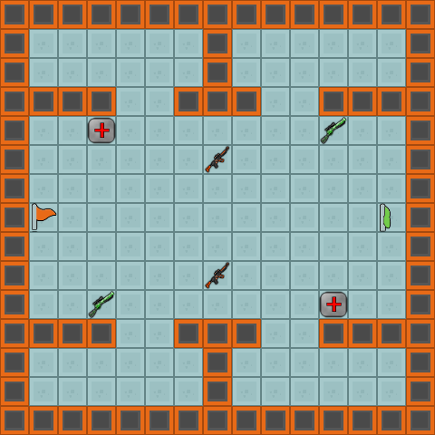
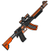

Game Rules¶

Above is a screenshot of a game before the first turn
Game Overview¶
TL;DR
It’s a squad vs squad turn based top-down shooter with weapon/health/shield pickups and control points.
Quick Definitions¶
- Unit
- A single robot soldier. Each one can be given orders by your AI independently.
- Team or Squad
- The collective group of 4 units. Can be designated as Amber team or Blue team. Your AI is in charge of all 4 units on one team.
- Pick up

- An item that can be picked up by a unit. Can be health, a shield, or one of various weapons.
- Control Point
- A point on the map that can be captured by a team.
- Mainframe
- A control point with a special property - if your team controls at least one Mainframe, your units will respawn after being destroyed. It otherwise behaves in all aspects like a regular control point.
- Turn Limit
- The number of turns until the game ends. It can end early if one team has no units remaining alive.
- Turn Timeout
- The amount of time an AI is given to calculate and perform its actions. Default is 400 ms.
Game Demo¶
Main Objective¶
The main objective is simple: get as many points as you can before the turn limit is reached.
Turns¶
- The game is played in a series of turns. Each turn, you may assign each of your 4 units a single action.
- On each turn, every unit can either do nothing, pick up whatever is on it’s tile, move, shoot, or activate a shield it picked up on a previous turn.
When your function returns, every unit that has been assigned an action will perform it, while those that haven’t will do nothing (stand still). Actions from both teams are executed at the same time, but action types are executed in the following order:
- Pick ups are obtained and their effects applied
- Shields are activated
- Shots and their damages are calculated
- Movement is executed
- Control Points are updated
- Shields that have been active for 5 turns are expired
- Units are respawned
The World¶
The world is divided into a grid of tiles. The tiles can be FLOOR, AMBER_SPAWN, or BLUE_SPAWN (all of which can be walked and shot through), as well as WALL (which can’t be walked on or shot through). On some of the tiles there are entities. Entities include pick ups and control points.
An example of a map featuring various entities
The source files for each map are in PNG format in the Maps folder. For info on creating your own maps, see Making custom maps.
The top left coordinate of the world is (0, 0).
Note that while most maps will be symmetrical on at least one axis, you should consider how your AI would perform on either side of an asymmetrical map. One such map has been provided for you in the starter kit.
Moving¶
A unit can move a single tile in 8 cardinal directions (horizontally, vertically, diagonally). Obviously, units can’t move through walls. If two units on opposing teams try to move into the same tile, both moves will be ignored. If two friendly units try to move to the same tile, the unit which got the order first will move. See the Java API Reference or Python API Reference for more info. If any two units try to swap positions, both moves will be allowed.
Shooting¶
Each beam blast in the video above is a single shot. The video spans 4 turns.
A unit can only shoot in any of the same 8 cardinal directions it can move in (horizontally, vertically, diagonally). The range and damage of a shot varies by weapon. See Weapons for more details.
Each unit starts with 30 Health Points or HP. Since all shots are executed at the same time, it is possible for two units to destroy each other on the same turn.
There is no friendly fire. That is, all shots will harmlessly pass through any friendly units in their path.
The game displays shots (from any weapon) as bright laser beams corresponding to the colour of the team that fired it. When a unit is destroyed, it will explode. This is a visual effect only, and has no effect on any other units or aspects of the game.
Damage Multiplier
If multiple units shoot the same enemy, a multiplier equal to the number of units shooting is applied to the aggregate damage done. For example, if Unit A shoots Unit X with 5 damage, and Unit B shoots Unit X with 10 damage, then the aggregate damage (10 + 5) = 15 multiplied by 2 Units shooting (Unit A and B), for a total damage of 30.
Respawns¶
Units will respawn one turn after being destroyed (i.e. they will miss a single turn, and respawn at the very end of the second turn). Respawning will only happen if the team currently owns at least one Mainframe.
When respawning, units will keep their weapon from before they were destroyed, as well as the number of shields in their inventory. Their health will reset to the default value of 30.
If a team has no Mainframes under their control, and all 4 units are destroyed, the game will end and the opposing team will receive the squad elimination bonus.
Pick ups¶
Pick ups are located on various tiles on the map, and can be picked up by a single unit, after which they disappear. A pick up can either replenish a unit’s health (even above the starting value of 30 HP), add a shield to its inventory, or equip it with a new weapon. After respawning, a unit will keep the weapon it had when it was destroyed.
Weapons:
| Preview | Name | Range | Damage | Description |
|---|---|---|---|---|
 |
Blaster | 5 | 4 | A moderately balanced pistol. Every unit starts with a blaster equipped. |
 |
Scatter Gun | 2 | 25 | Useless at long range, devastating in close quarters. |
|  | Laser Rifle | 4 | 8 | Like any ol’ rifle, but with lasers. It compensates for it’s lack of range with a stronger punch. |
 |
Rail Gun Sniper | 10 | 6 | Relatively weak, but its incredible range makes it both a fearsome offensive and defensive device if leveraged correctly. |
Other Items:
| Preview | Name | Effect |
|---|---|---|
|
Repair Kit | A handy box full of tools and scrap materials. Increases a unit’s HP by 20 points. Units can pick this up even if their health is above 30 HP. |
| Shield | An advanced forcefield impenetrable by any weapon. When activated, lasts 5 turns and makes the unit using it invincible. However, the unit using it can’t shoot during these turns either. |
Control Points¶
A control point is a flag that can be captured by a team. The flag has 3 states:
- Captured by Amber team

- Neutral (not captured by anyone)
- Captured by Blue team
In order to capture a control point, a unit must move to any tile adjacent to it (or onto the control point tile itself).
A control point will be updated on the same turn a unit lands beside it.
A control point can only turn a team colour if it is neutral. If it is captured by the enemy team, it will change to neutral on the first turn, and to the capturing team on the next.
The control point will be updated in favor of the team with the most adjacent units beside it. If the number of opposing units is equal, the control point’s state will not change.
Mainframe¶
A Mainframe behaves exactly like a control point. The only difference (other than visual) is that a team that controls at least one Mainframe will respawn dead units one turn after they are destroyed.
The Mainframe states look like:
- Captured by Amber team

- Neutral (not captured by anyone)
- Captured by Blue team
Shields¶
Shields can be picked up like all other pick-ups, and are stored in each unit’s inventory.
A unit can activate one of the shields in its inventory as its action during a turn. The shield will activate at the beginning of the turn, last for 5 turns (including the turn it was activated), and then expire at the end of the 5th turn.
When a shield is active, the unit becomes completely immune to all shots, but is also unable to shoot other units. A unit with an active shield can still move and obtain pick-ups, and will capture control points as usual if adjacent to them.
A shield can be activated even if one is already active, this will simply reset the remaining turns of the active shield to 5.
A unit can carry any number of shields in its inventory.
The HUD¶
The HUD contains various pieces of information about the current state of the game.
- The current score for the team.
- The unit’s icon. Turns into an X when the unit is destroyed.
- A picture of the unit’s currently equipped weapon.
- The number of shields this unit has in its inventory.
- The unit’s current health.
- The name of the unit.
- The name of the unit’s currently equipped weapon.
The elements marked 2, 3, 4, 5, 6, and 7 are repeated for each unit on a team.